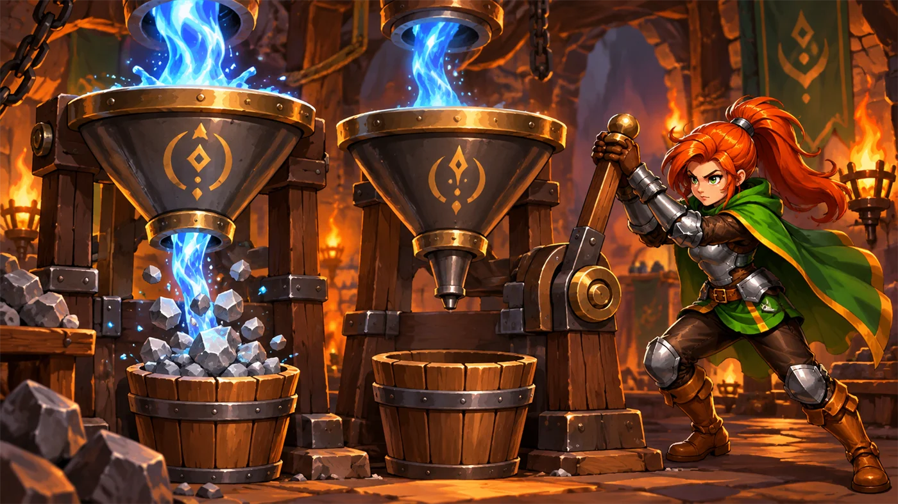

故事：你走进溪谷深处的一座老图书馆。灯火还亮着，却空无一人——
只有一位管理员抬眼看你一下，像是早就在等你了。
他什么也没说，只把手指点了点墙上的门。门上刻着一行提示：
"密码写在'提示'按钮里。"
原来这一关不考你会不会瞎猜，考你会不会"找答案"。
扣哒考级 · GESP PYTHON 二级 · 第 3 单元 | 回声溪谷 ECHOSTREAM VALLEY
密文石桥 ASCII 编码与数据类型转换
ASCII Encoding & Type Conversion

安雅
红发队长 · 你的旅伴
溪谷上横着一座古老的石桥。桥栏杆上刻满了奇怪的符号——有字母、有数字，还有一堆看不懂的小方格。
你正琢磨这是谁刻的，安雅已经蹲下来，用手指描着其中一行：你猜怎么着？ 这些都是数字。
"数字？"你愣住了。
对。计算机里所有的字——字母、标点、甚至空格——全都是用数字存起来的。 这座桥就是一本密码本。
你正琢磨这是谁刻的，安雅已经蹲下来，用手指描着其中一行：你猜怎么着？ 这些都是数字。
"数字？"你愣住了。
对。计算机里所有的字——字母、标点、甚至空格——全都是用数字存起来的。 这座桥就是一本密码本。
安雅 · 红发队长
这一单元有三件事：字怎么变成数、数怎么变回字、以及不同类型的数据怎么互相转换。听着有点枯燥？放心，我会给你讲个"点名"的故事。

assets/illustrations/py-L2-03-01_ascii_tablet.webp
【配图位】桥头立着一块长条形石碑，碑面刻着规整的网格：左边一列是字母符号，右边一列是对应的数字；发光的符文把每一对连起来，苔痕与溪水雾气环绕。
0 单元导语与目标
Unit Overview
1学完这个单元，你将能……
- 说清为什么计算机只能用 0 和 1 表示信息
- 知道 ASCII 编码是什么、为什么需要它
- 记住几个常见字符的 ASCII 值
- 用
ord()和chr()互相转换字符与编码 - 熟练使用
int() / float() / str()三种类型转换 - 分清自动转换与手动转换
2对标 GESP 考纲（Python 二级）
- （6）掌握 ASCII 编码，掌握数据类型转换方法
- （8）了解数字类型、字符串类型和布尔类型的初级使用
- （10）掌握数学函数、字符串函数的使用
- 考核目标：能完成字符与编码之间的转换，能正确处理数据类型
1 计算机只认 0 和 1
Why Only 0 and 1
还记得吗？计算机是靠电路工作的。而电路最简单、最可靠的状态只有两种：
| 电路的状态 | 我们怎么写 | 打个比方 |
|---|---|---|
| 通电 | 1 | 灯亮了 |
| 断电 | 0 | 灯灭了 |
就这么两盏灯，怎么可能表示出成千上万个汉字和字母呢？
答案很朴素：一盏灯不够，那就多几盏。 两盏灯有 4 种组合（00、01、10、11），三盏有 8 种，八盏就有 2 的 8 次方 = 256 种组合——足够表示英文字母、数字和各种标点了。
图 2（SVG）：一串 0 和 1，最终变成了一个字母
凌克 · 影瞳刺客
我们刺客有一套暗号：敲一下墙是"安全"，敲两下是"有埋伏"。你看，只有两种信号，也能传递情报——计算机用的是同一个办法， 只不过它一次敲八下。
记住这两句：
① 计算机内部一切都用二进制（0 和 1）表示。
② 8 个二进制位 = 1 个字节，能表示 256 种不同的组合。
① 计算机内部一切都用二进制（0 和 1）表示。
② 8 个二进制位 = 1 个字节，能表示 256 种不同的组合。
2 ASCII 编码
ASCII Encoding
2.1 字符是怎么变成数字的
问题来了：0 和 1 的组合有 256 种，那哪一种组合代表字母 A 呢？
总不能你说是 3、他说是 7 吧。于是人们坐下来开了个会，把所有常见字符和数字一个个对上号， 做成了一张表——这张表就叫 ASCII 编码表。
ASCII 是什么：
ASCII（美国信息交换标准代码）是一张"字符 ↔ 数字"的对照表。
它规定：字母
全世界所有计算机都遵守这张表，所以数据才能互相传递。
它规定：字母
A 用 65 表示，a 用 97 表示，数字字符 0 用 48 表示……全世界所有计算机都遵守这张表，所以数据才能互相传递。
图 3（SVG）：ASCII 编码表节选与记忆规律
2.2 常见字符的编码
考试不会让你背整张表，但这几个数字最好记住：
| 字符 | ASCII 值 | 说明 |
|---|---|---|
'0' ~ '9' | 48 ~ 57 | 数字字符连续排列 |
'A' ~ 'Z' | 65 ~ 90 | 大写字母连续排列 |
'a' ~ 'z' | 97 ~ 122 | 小写字母连续排列 |
空格 ' ' | 32 | 最容易被忽略的一个 |
| 大写与小写的差距 | 32 | 'A'=65，'a'=65+32=97 |
记忆窍门：
字母是"接连排下去"的。所以只要记住
同理，
'A' = 65，
就能推出 'B' = 66、'C' = 67……同理，
'a' = 97，那么 'b' = 98、
'c' = 99。不用死记，会推就行。
2.3 ord() 与 chr()
Python 给了我们两个小工具，专门做"字符 ↔ 数字"的互转：
| 函数 | 作用 | 例子 | 结果 |
|---|---|---|---|
ord(字符) | 字符 → 编码数字 | ord("A") | 65 |
chr(数字) | 编码数字 → 字符 | chr(65) | "A" |
两个方向都试一试
Python
# 字符 → 数字
print(ord("A"))
print(ord("a"))
print(ord("0"))
# 数字 → 字符
print(chr(65))
print(chr(97))
print(chr(48))
# 它们是一对儿"互逆"的操作
print(chr(ord("H")))OUTPUT 65
97
48
A
a
0
H
97
48
A
a
0
H
"互逆"是什么意思？
chr(ord("H")) 先变成 72，再变回 "H"——
绕了一圈又回到自己。就像左转 90 度再右转 90 度，脸还朝着原来的方向。

扣哒鸭 · 调试官
ord 是 ordinal（序号）的缩写，chr 是 character（字符）的缩写。记不住就记这句：ord 查号，chr 查人。——查编号用 ord，把编号换成人（字符）用 chr。
3 数据类型转换
Type Conversion
3.1 三种转换函数
一级已经见过它们，二级要求你能熟练、准确地用：
| 函数 | 作用 | 例子 | 结果 | 易错点 |
|---|---|---|---|---|
int() | 转为整数 | int("100") int(3.9) | 100 3 | 直接截断，不四舍五入 |
float() | 转为小数 | float("3.5") float(7) | 3.5 7.0 | 结果一定带小数点 |
str() | 转为字符串 | str(100) str(3.5) | "100" "3.5" | 转换后不能做算术 |
bool() | 转为布尔值 | bool(0) bool(5) | False True | 0 和空值算 False |
转换实战
Python
print(int("100") + 1) # 字符串先变数字，再相加
print(int(3.9)) # 截断，得 3 而不是 4
print(float(7)) # 变 7.0
print(str(100) + "分") # 数字变文字，可以拼接
# 用 ord/chr 做小加密：字符编号 +1
print(chr(ord("A") + 1))OUTPUT 101
3
7.0
100分
B
3
7.0
100分
B
最后一行很有意思：
这就是最原始的"加密"办法：把每个字母往后挪一位。 古罗马的凯撒大帝就是这么干的，所以它叫"凯撒密码"。
chr(ord("A") + 1)——
先查 A 的编号 65，加 1 变成 66，再换回字符得到 B。这就是最原始的"加密"办法：把每个字母往后挪一位。 古罗马的凯撒大帝就是这么干的，所以它叫"凯撒密码"。
3.2 自动转换与手动转换
转换分两种：一种是你主动写函数去转（手动/显式转换）， 另一种是 Python 自己帮你转（自动/隐式转换）。
图 4（SVG）：自动转换与手动转换
最常考的坑：
不转就会报 TypeError——这是二级笔试里最爱出的一个小陷阱。
input() 拿到的永远是字符串。
想拿它做运算，必须手动转：n = int(input())。不转就会报 TypeError——这是二级笔试里最爱出的一个小陷阱。
4 进制的写法
Number Bases in Python
同一个数字，可以用不同的"进制"来写。Python 给每种进制都准备了一个前缀：
| 进制 | 前缀 | 写法示例 | 等于十进制多少 |
|---|---|---|---|
| 十进制（我们平时用的） | 无 | 65 | 65 |
| 二进制 | 0b | 0b1000001 | 65 |
| 八进制 | 0o | 0o101 | 65 |
| 十六进制 | 0x | 0x41 | 65 |
同一个数，四种写法
Python
print(0b1000001) # 二进制前缀 0b
print(0o101) # 八进制前缀 0o
print(0x41) # 十六进制前缀 0xOUTPUT 65
65
65 （输出时 Python 一律按十进制显示）
65
65 （输出时 Python 一律按十进制显示）
前缀记忆法：
0b 的 b = binary（二进制）；0o 的 o = octal（八进制）；0x 的 x = heXadecimal（十六进制）。
注意：0o 里是字母 o，不是数字 0，这是很容易打错的一个地方。
注意：0o 里是字母 o，不是数字 0，这是很容易打错的一个地方。
5 代码实战
Level Practice
关卡
指点迷津
进入关卡 →

assets/stages/py-L2-03-stage1_library_password.webp
【关卡截图位】请把《指点迷津》的游戏画面截图放到此处（放入 assets/stages/ 目录，文件名为 py-L2-03-stage1_library_password.webp）。
思路：看上面的关卡实况——门上刻着提示：密码藏在"提示"按钮里。
找到它之后，用 say() 把它说出口就行。
密码是一个字符串——也就是我们在本单元反复强调的那种"被引号包起来的文字"。
重点示例：说出密码
Python
# 图书馆大门的密码是："Hush"
hero.say("Hush")要点 字符串必须带引号，大小写也要完全一致
为什么大小写这么重要？
因为
写成
'H' 的 ASCII 是 72，而 'h' 是 104——
它们在计算机眼里是两个完全不同的字符！写成
"hush" 门不会开，写成 "HUSH" 也不会。
这正是我们刚学的 ASCII 编码在实际中的体现。
找答案也是一种能力：这一关教的是"看提示"。
以后写程序卡住时，先读报错、再看文档、最后才问人——顺序别反了。
去扣哒世界闯这一关 →
6 常见陷阱
Common Pitfalls

扣哒鸭 · 调试官
编码和类型转换，是"看着简单、错得离谱"的重灾区。四条，我都替你试过了。
1
把数字字符当成数字。以为
'5' 和 5 是一回事。
扣哒鸭：加引号的是"字"，不加引号的是"数"。
它们长得像，但一个是"画出来的符号"，一个是"能算的数"。
'5' 的 ASCII 是 53，5 就是 5。它们长得像，但一个是"画出来的符号"，一个是"能算的数"。
正确理解：
"5" 是字符串，5 是整数2
以为
int(3.9) 会四舍五入成 4。
扣哒鸭：
int() 是直接砍掉小数部分，得 3。
想四舍五入要用 round(3.9)。这两个函数分工不同，别让它们互相替班。正确写法：
int(3.9) → 3；round(3.9) → 43
忘了
ord() 和 chr() 谁管哪个方向。
扣哒鸭：ord 把字符换成数字，chr 把数字换回字符。
记法：ord 是 order（序号），chr 是 character（字符）。
实在记不住——
chr(65) 得 'A'，背下这一条就不会反。正确用法：
ord("A") → 65；chr(65) → "A"4
把
0o 写成 00。（字母 o 和数字 0 打混）
扣哒鸭：八进制前缀是字母 o，不是数字 0。
写成
00101 的话，Python 会当成普通十进制的 101，结果就差远了。正确写法：
0o101 → 65；0x41 → 65；0b1000001 → 657 题目练习
Practice
第 1 题改编自 2026 年 9 月 · Python 二级 第 3 题，其余为原创练习题。
改编自 2026 年 9 月 · Python 二级 · 第 3 题单选题
下列 Python 代码执行后，其输出是（ ）。
1 print(3 == 3.0)
查看答案与详解
答案：A。
两个易错点：① Python 的布尔值必须写成
② 整数与小数可以直接比较，不需要先转换类型——Python 比较的是数值，不是类型。
对应小节3 数据类型转换。
3 是整数、3.0 是小数，类型不同，但数值相等，所以比较结果是 True。两个易错点：① Python 的布尔值必须写成
True／False（首字母大写，写成 true 会报错）；② 整数与小数可以直接比较，不需要先转换类型——Python 比较的是数值，不是类型。
对应小节3 数据类型转换。
原创练习题单选题
已知字符
'A' 的 ASCII 值是 65，那么字符 'D' 的 ASCII 值是（ ）。A.66 B.67 C.68 D.69
查看答案与详解
答案：C。大写字母在 ASCII 表里是连续排列的：
A=65、B=66、C=67、D=68。
思路：从 A 数到 D 要走 3 步，65 + 3 = 68。
对应小节2.2 常见字符的编码。
思路：从 A 数到 D 要走 3 步，65 + 3 = 68。
对应小节2.2 常见字符的编码。
原创练习题单选题
下列 Python 代码执行后，输出的结果是（ ）。
1 print(chr(ord("A") + 2))
A.A B.B C.C D.67
查看答案与详解
答案：C。分三步走：
①
② 65 + 2 = 67；
③
对应小节2.3 ord() 与 chr()。
①
ord("A") = 65；② 65 + 2 = 67；
③
chr(67) = "C"（因为 A=65，所以 67 对应 C）。对应小节2.3 ord() 与 chr()。
原创练习题单选题
下列 Python 代码执行后，输出的结果是（ ）。
1 a = "25" 2 b = 10 3 print(int(a) + b)
A.2510 B.35 C."25" + 10 D.程序报错
查看答案与详解
答案：B。
易错点：如果不转换，
对应小节3.1 三种转换函数。
a 是字符串 "25"，
经过 int(a) 转换后变成数字 25，25 + 10 = 35。易错点：如果不转换，
"25" + 10 会报 TypeError；
而 "25" + "10" 会得到字符串 "2510"。对应小节3.1 三种转换函数。
原创练习题判断题
在 Python 中，
'a' 和 'A' 的 ASCII 值相同。（ ）查看答案与详解
答案：错误（×）。
计算机严格区分大小写，这也是为什么密码输入错一个大小写就打不开门。
对应小节2.2 常见字符的编码。
'A' 是 65，
'a' 是 97，两者相差 32。计算机严格区分大小写，这也是为什么密码输入错一个大小写就打不开门。
对应小节2.2 常见字符的编码。
原创练习题单选题
下列 Python 代码执行后，输出的结果是（ ）。
1 print(0x41, 0o101, 0b1000001)
A.0x41 0o101 0b1000001
B.65 65 65
C.41 101 1000001
D.程序报错
B.65 65 65
C.41 101 1000001
D.程序报错
查看答案与详解
答案：B。三种前缀分别代表十六进制、八进制、二进制，
但它们表示的是同一个数值 65；
Python 输出时一律按十进制显示，所以都是 65。
易错点：以为输出会保留原前缀——不会，前缀只是"书写方式"。
对应小节4 进制的写法。
易错点：以为输出会保留原前缀——不会，前缀只是"书写方式"。
对应小节4 进制的写法。
原创练习题编程题
题目要求：输入一个小写字母，输出它对应的大写字母及其 ASCII 值（分两行输出）。
提示：大写字母比小写字母小 32。
提示：大写字母比小写字母小 32。
查看参考答案与要点
ch = input("请输入一个小写字母：")
# 小写转大写：ASCII 值减 32
upper = chr(ord(ch) - 32)
print(upper)
print(ord(upper))
运行示例：输入 d → 输出 D 和 68。
要点：
① 输入得到的是字符串，用 ord() 取出它的编码；
② 小写字母减 32 就是对应大写字母（'a'=97 → 'A'=65）；
③ 再用 chr() 把数字换回字符；
④ 最后用 ord() 输出大写字母的编码。
对应小节2.3 ord() 与 chr()；3.1 三种转换函数。
8 本单元小结
Unit Summary

贺舒曼 · 镜中先知
这一单元其实只讲了一句话：计算机眼里没有"字"，只有"数"。我们给每个字符编了号（ASCII），于是字符也能被存进 0 和 1 的世界里。
ord() 查号，chr() 查人；int() 砍小数，round() 才四舍五入。记住这两条，这一章你就稳了。
你在密文石桥上学到了什么
- 二进制——计算机只能用 0 和 1 表示信息；8 位 = 1 字节 = 256 种组合。
- ASCII 编码——字符与数字的对照表；'0'~'9' 是 48~57，'A'~'Z' 是 65~90，'a'~'z' 是 97~122。
- 大小写差 32——'A'=65、'a'=97。
- ord 与 chr——
ord()字符转编码，chr()编码转字符，两者互逆。 - 三种转换——
int()截断取整、float()变小数、str()变文字。 - 自动 vs 手动——整数与浮点数混算时自动升级；字符串要参与运算必须手动转换。
- 进制前缀——
0b二进制、0o八进制、0x十六进制。